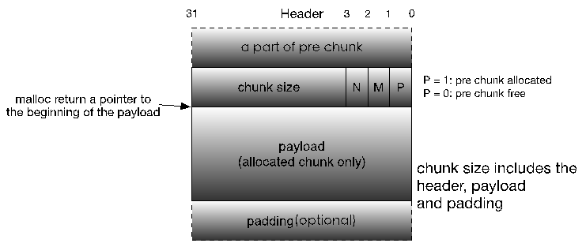
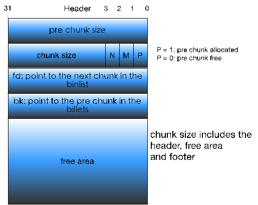

前话
这一个多月真是经历了很多事…我也开始pwn入门了
这里是我对堆的一些理解，也会写现在了解的一些利用方式 (应该)会持续更新
有错误也会及时订正
chunk
首先从chunk说起


从网上盗了两张图来
上面是已经分配的chunk 下面则是在bin中的chunk
我们可以从各个部分的用处入手 这样有助于更好地理解堆
prev_size
prev_size的内容就是在虚拟地址下上一个堆块的大小。用处在于当这个chunk被free时，假如上一个chunk是处于空闲状态，可以直接通过prev_size来找到上一个chunk的位置，就可以用来合并chunk.
size
size里的值为在当前chunk的大小。这里需要注意的是，每一个chunk的大小都是8的倍数，也就是说后三位其实是完全没用的。 那么在linux下，为了不浪费这些空间，就将这三位变成了三个标志位。N位代表着这个这个堆块是不是主分配区，M位代表着这个chunk是不是用mmap映射来的，而P位则代表上一个chunk是否空闲。
fd
fd里的值为在bin里上一个chunk的指针
bk
bk里的值为在bin里下一个chunk的指针
fd_nextsize(only in largebins)
在largebin中由于每一个bin里的大小并不是完全相等，所以就有可能连续几个chunk都是相同的大小。为了加速遍历，就有了这一个指针，指向下一个大小的chunk。
bk_nextsize(only in largebins)
基本同上，就指向上一个大小的chunk咯。
一些助于理解的补充
如上图所示，chunk分为被使用和不被使用的。比如fd和bk指针，若在被使用的chunk中，这两个值是完全没有用的。所以在被使用的chunk中，这两个值就作为给用户的区域。
再比如prev_size。这个值仅仅在虚拟地址连续的上一个chunk是空闲的时候才有用。所以当上一个chunk不空闲的时候，也能被上一个chunk给使用。
bins
为什么会有bin这个概念呢？其实也很好理解。
一个进程假如需要一段堆空间，假如每次都要跟操作系统进行交互，那岂不是很不妙，疯狂在ring0和ring3下进行切换。
那么实际上操作系统会做什么呢？
简单来说，malloc有一个阙值假如你第一次申请分配的空间超过了这个阙值(128k)，那么系统就会直接通过mmap映射给用户，最后就用ummap解除映射。
假如不到这个阙值的话，那么系统就会首先分出一块连续地址空间，然后通过对free后的chunk进行管理，这样就会快上许多。
那么用来管理chunk的东西，我们就将其称之为bin。
根据大小，bin分为smallbin,largebin
还有fastbin 和 unsortedbin
由于没认真看过malloc源码，我也不敢说太多东西…这里就想到什么写什么了
- fastbin是一个单项链表，bin中存储着最后一个chunk的指针。其中chunk的大小比较小，x86下为0x10 - 0x50 x64下为0x20 - 0x100。通过fd指针可以遍历整个链表。
- 在其他的bin中都是用双向链表链接。保存着一个链表的头尾指针。
- largebin里面是由大到小排序
- 在某种特殊情况下(回收一块比较大的内存，且当其合并了相邻空闲的chunk后的大小大于阙值的时候)，会将多于阙值的大小返还给系统，并将阙值提高到合并后的chunk的大小。
- 为防止被回收，fastbin的p位不置0。
- 任何在topchunk附近的空闲chunk都会被回收。
一些堆的利用
1.double free
double free，顾名思义，将一块chunk free两次。
double free的危害都有啥？
我们知道，free就是将一个chunk按照它的大小放在bin中,并且在其中以链表的形式连接起来。那我多free一次又何妨？
就是因为它是用链表的形式组合起来的，每一次将一个chunk分配出去后，bin中的尾指针数据就应该更新。那通过什么更新？当然是分配出去的这个chunk里面所填写的fd指针。而malloc过一次的chunk你是可以将其中的fd指针给修改的，那么当其再一次malloc的时候，就会将你修改后的fd指针指向的那块东西当做chunk分配给你了。那你岂不是就可以为所欲为了？
改GOT表！
疯狂leak内存。
Dynelf…
但是free过后，下一个chunk的p位不就置0了吗，你咋double free?
特殊情况来啦:fastbin。
为了防止被合并，fastbin就有一个特殊的机制，即使free后，下一位的chunk的p位也不置0，辣么我们就可以为所欲为啦！
需要注意的是，
- free的对象切记不要在topchunk旁边，不然你是fastbin也得死。
- 即使是fastbin也是有检查的。就是不能连续两次free同一块内存空间，只要你间隔一个再进行free就好啦。
- 目标空间里的size位要满足你malloc的辣个size。(最简单的fake chunk了吧)
- 这边值得注意的是，在64位下，只检查最低的四个字节。(周末做题才发现的…感谢v爷爷)
2.UAF(use after free)
这个其实hin简单。
就是记得不要出现Dangling pointer就好了。
那么这个又有什么用呢？
基本上用这种东西的时候，这个chunk里都有一个函数指针。
那么就可以直接改掉那个函数指针，直接利用一发就好啦！
3.unlink
unlink这个被各种称为"简单"的利用…我想了半天…
但也是因为有这样想过，我才理了一遍对堆的理解。嘛…有利有弊嘛。
这里要先说一个思想，也是我理了半天才理清楚的东西:
unlink重要的是过程！而不是结果！
这个怎么说呢？
首先，我们要知道unlink是啥。
从bin中将一个chunk取下来嘛！
那想象一下，假如是你写unlink，你要怎么做？
由于是双向链表，你肯定要进行这样的操作:
p -> fd -> bk = p -> bk;
p -> bk -> fd = p -> fd;
这样才算把一个chunk给取下来。
那么，假如我们可以控制一个chunk的fd和bk指针，再改掉它的p位，不就可以将两个值，通过本身的unlink机制，写在两个地方了吗？
假如可以直接这样利用，那无疑是很好的。只要你保证你fake的指针值没啥问题(有被映射)，就可以造成近似的任意位置写(反正一般来说也是写指针呀)
但是不幸的是，在现在这是有条件的。
简单来说，他要判断
p -> fd -> bk == p p -> bk -> fd == p
通过这两个判断后，才会执行之前的过程。
那么当题目想考你unlink的时候，首先会有一个堆溢出，其次有一个全局数组储存了你每次malloc的地址，那么你就可以在先在申请的chunk中伪造一块chunk,fake_fd内写入那个数组中你所要写的那个chunk的地址 - 0x18(x64下，bk相对于chunk头的偏移)，在fake_bk下写入地址 - 0x10，这样就可以绕过检查。
这样之后，在那个数组中就会将这个数组 - 0x18的地址写入其中(因为上面有赋值操作，且最后一步是将p -> fd写入地址，而伪造的fake_fd就为地址 - 0x18)
有了这个就基本上可以为所欲为啦！基本上都会有堆这个数组的一些操作，比如查看目标地址上的值呀，再比如更改目标地址的东西呀…这里你就可以直接将这个数组后面的值给覆盖掉了，Do everything you want to do!
2018.06.04 更新
4.house of orange
house of orange里面可包含了太多太多的东西了…
首先，我们要说一下FILE结构。
1 | struct _IO_FILE_plus |
1 | struct _IO_FILE { |
1 | struct _IO_jump_t |
–直接从v爷爷博客上搬过来的
这个结构体就是由一大堆指针值和vtable组成。想想看我们平常在如何用文件指针,就有一种豁然开朗的感觉。
然后关于vtable，相信学过c++的人对于vtable这个概念并不陌生。在这里我只能给个猜测，libc源码中的vtables是来自各个系统自带的一些类的vtable，然后将这些东西管理在一起，用chain这个指针串成链表。
所以平常我们用的那些文件函数都是对vtable里面函数的封装(后面利用会再次提到)。
接下来说一下一unsortedbin attack。
说这么玄乎，其实这个攻击就是在一个情况:当unsortedbin只剩最后一个chunk的时候，它会将这个main_arena的top值(main_arena + 88)写入这个chunk的bk指针指向的地址.(我猜测原本只是为了初始化bin里面的fd和bk) 并不是…这里是为了维护一个双向链表。这里没有检查。但由于这里要写的值是一个固定值，所以…用处比较少。一般用来改掉fastbin的maxsize，利用fastbin attack。但在这里，我们用来修改IO_list_all的值(也就是IO_FILE的头)。这里是为了触发这么一个机制：当IO_list_all这个指针对应的结构体不合法的时候，它会通过这个结构体的0x68偏移(chain)来继续向下遍历，而当我们将它的值改成unsortedbin的地址是，我们知道bins是一个数组，也就是所有的bins都是在一个线性地址下，那么当前地址+0x68的指针正好对应着smallbin的第6个成员的bk，也就是大小为0x60的smallbin的地址，所以我们就可以在smallbin 0x60大小的位置伪造一个IO_file结构体。
伪造一个结构体又能如何呢？对文件进行操作的时候，那些文件函数都是调用vtable中的函数，而参数是调用结构体中的参数，所以我们只需要伪造这些参数，在理论上就可以getshell。
在glibc 2.23版本以前，vtable这个虚函数表的指针是可以被修改的，所以你就可以把这个指针值改成可控区域的地址，伪造一个table就行。
但是在2.24及以后的版本，这些vtable被单独放在了一个节区上，并且有对vtable的值进行检查，地址值只能在这个段上。所以只能用这个段里面的vtable来进行攻击。
就我现在的理解而言，要想达成这样，那么那个vtable所对应的那个结构体必须要包含一个函数指针(不在vtable内)，在调用vtable里面的函数的时候会调用外面的函数，这样就能进行攻击。(这个兴许是错的，但我现在只理解到这里)
最后具体咋绕网上教程好多…就不在这里多叙述啥了。总而言之，那个结构体你都可以控了，岂不是为所欲为。
后话
对于pwn的理论的研究，我其实还是蛮乐在其中的。
但是对于写poc,调dbg…
真是太麻烦了！